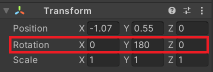
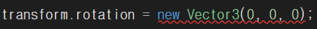
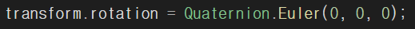
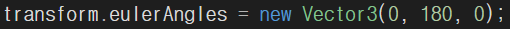
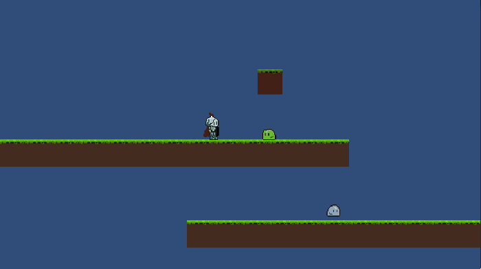

#Quarternion & eluerAngles
#transform.rotation
#2D 캐릭터 좌우반전 예제
*개인적인 유니티 공부 내용을 기록하는 용도로 작성된 글 이기에, 잘못된 내용이 있을 수 있습니다.
#Quarternion & eluerAngles
오브젝트 회전에 대해 이야기 하기 전에, eluerAngles 과 Quarternion에 대한 지식이 필요하다.
eluerAngles 이란, x,y,z축을 사용해서 오브젝트를 0~360 도 회전 시키는 기본적인 좌표계이다. 그러나, eluerAngles 에는 Gimbal Lock 이라는 문제점이 존재한다.
*관련영상
따라서, x,y,z 축에 가상의 축을 하나 더 추가한 사원수라는 개념의 Quarternion 이라는 것을 사용해야 한다.
Quaternion은 사용하기에 어려운 개념이지만, 유니티는 Quarternion 관련 함수를 제공하기에, 유니티 프로그래머는 유니티에서 제공하는 함수를 사용하기만 하면 된다.
#transform.rotation

Scene에 존재하는 모든 오브젝트에는 위치를 나타내기 위한 Transform 컴퍼넌트가 존재한다. Transform 컴퍼넌트의 Rotation은 물체의 회전각도를 담당하는데, 이 Rotation이 앞서 설명한 Quaternion을 기반으로 한다.
따라서 다음과 같이 Position 을 초기화 하는 것 처럼 Vector3 객체를 넘겨주면 에러가 발생한다.

Rotation 값을 초기화 하기 위해서는, transform.rotation에 아래와 같이 Quarternion의 Euler 각을 넘겨 주어야 한다.

혹은, 그냥 바로 transform에 eluerAngles를 바로 넘겨주는 방식도 가능하다.

#2D 캐릭터 좌우반전 예제
다음은 eulerAngles를 이용해 플레이어를 좌우 반전 시키는 예제이다.
키 입력은 GextAxis("") 로 받았고, rigid.velocity 를 이용해서 플레이어 이동을 구현하였다. 캐릭터에는 RigidBody2D 중력이 설정되어 있으며, 지면과 플레이어의 충돌은 Collider2D로 충돌을 감지한다.
Rigidbody2D rigid;
[SerializeField] private float speed;
[SerializeField] Transform pos;
void Awake()
{
rigid = GetComponent<Rigidbody2D>();
}
void FixedUpdate()
{
/* rigid.Velocity */
float pos = Input.GetAxis("Horizontal");
rigid.velocity = new Vector2(pos * speed, rigid.velocity.y);
// 좌우반전
if (pos < 0)
transform.eulerAngles = new Vector3(0, 0, 0);
else if (pos > 0)
transform.eulerAngles = new Vector3(0, 180, 0);
}캐릭터가 좌측 우측키를 누를 때 마다 Rotation값이 변경된다. (단, 아래 예제는 초기 플레이어 오브젝트 Rotation 값이 180도로 설정되어 있기에 각 상황에 맞게 if , else if 구문의 부등호만 수정해 주면 된다.)
